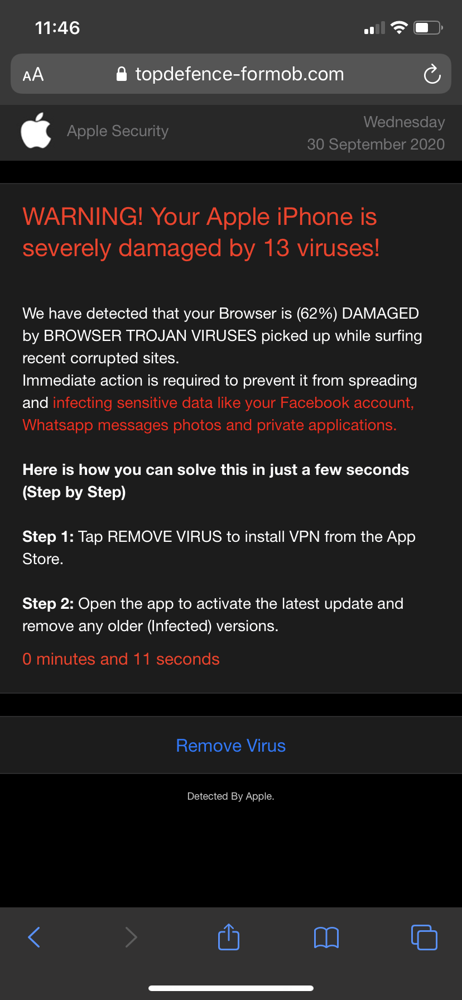

Note:
Perceptions of "harmless" adware widely differ among users due to varying tolerances for ad intrusiveness, concerns about privacy, experiences with device performance, ethical considerations regarding data collection, differing expectations of an ad-free experience, and even cultural or regional influences. What one user may find tolerable or unobtrusive in terms of advertisements within an app, another might consider highly disruptive or invasive, especially regarding how personal data is collected and used for targeted advertising. Ethical objections, performance impacts, and individual expectations all contribute to these differing perceptions, emphasizing the subjectivity of what users consider to be harmless adware.
Ethical advertising in adware is crucial for maintaining user trust, respecting privacy, and upholding the integrity of digital advertising. It ensures that advertisements are non-intrusive, relevant, and clearly distinguished from core software functions. Ethical practices prioritize user privacy, comply with regulations, sustain brand reputation, foster fair competition, and fulfill social responsibilities. By adhering to ethical standards, adware can contribute to a transparent, sustainable, and trustworthy digital advertising landscape.
Transparency and user consent form the cornerstone of ethical advertising in adware. They involve clear disclosure of ads within software, distinguishing them from core content, and obtaining explicit user consent for personalized ads or data collection. Respecting user privacy preferences, providing control over advertising settings, and transparently communicating data usage are crucial. These practices build trust, empower users, and ensure that adware operates ethically, fostering a respectful and transparent advertising environment.

Several companies and software have implemented ad-supported models in ways that prioritize user experience, maintain ethical standards, and ensure harmless adware. Here are some examples:
Mozilla Firefox

Mozilla has employed a non-intrusive ad-supported model within its Firefox browser. They display sponsored content or advertisements within new tabs, ensuring that these ads don't interfere with the browsing experience. Users have control over these ads and can easily dismiss or customize them.
BitTorrent
BitTorrent, the peer-to-peer file sharing protocol, offers a client known as µTorrent that has a free version supported by non-intrusive ads. The ads are displayed discreetly within the software and don't impede the functionality of the client, allowing users to download and share files without interruptions.
Skype

Skype, the communication platform, has incorporated ads in its free version. The ads are displayed in a way that doesn't disrupt conversations or calls. Users have the option to upgrade to a premium, ad-free version if they prefer an ad-free experience.
These companies and software have successfull implemented ad-supported models by ensuring that the ads are displayed in a non-intrusive manner, allowing users to continue using the software and service without significant interruptions. They respect user experience, provide options to users to upgrade to ad-free versions, and maintain ethical practices in their advertising strategies.
FreeWater is a company that is ushering a paradigm shift in how advertisements are used. In this case, advertisements are used to offset the cost of the water and manufacturing of the bottle.
While adware can be annoying or unwanted, some ad-supported apps in the mobile space may be considered relatively harmless as they adhere to ethical advertising practices and do not cause significant harm to the user or their device. Here are some examples:
Free Versions of Apps
Many free versions of mobile apps contain ad-supported models. These ads are often displayed within the app's interface but don't cause harm to the device or the user's personal data.
Games With Advertisements
Several mobile games display ads between levels or during natural breaks in gameplay. These ads usually don't interfere with the game's functionality and are a way for developers to monetize their free-to-play games.
Opt-In Advertisements
Some apps offer users the choice to view ads voluntarily in exchange for certain benefits, such as in-app currency, premium features, or rewards. Users have the option to engage with these ads and are not forced to interact with them.
Note:
Harmful adware poses significant risks to individuals and organizations, and understanding how to recognize, prevent, and respond to such threats is essential for maintaining online security and privacy.
Harmful adware in the mobile space presents significant issues, notably
impacting battery life, device performance, and posing risks when embedded
within legitimate applications. Firstly, such adware often runs background
processes that consume considerable system resources, leading to rapid
battery drain and a notable decrease in device performance. These processes
continuously display ads, track user behavior, or perform other intrusive
actions without user consent, significantly affecting the overall user experience.
A common advertisement for individuals clicking on unwanted ads
or accessing websites that allow malicioius pop-up advertisements.
This advertisement is BOGUS!

Moreover, one prevalent concern is the infiltration of harmful adware into seemingly
legitimate applications. This occurs when developers unknowingly or maliciously
integrate adware into their apps. While the core functionality of these apps appears genuine,
the embedded adware operates surreptitiously in the background, displaying invasive ads, collecting
sensitive user data without consent, or even
redirecting users to malicious websites.
These issues pose severe threats to users' privacy and security. Adware
embedded within legitimate apps not only compromises user experience but
also exposes users to potential malware, phishing attempts, or data breaches.
Additionally, these adware-infected apps often bypass initial security checks
on app stores, making it challenging for users to differentiate
between safe and compromised applications.
The impact of harmful adware on mobile devices goes
beyond mere annoyance or inconvenience. It jeopardizes user privacy,
compromises device performance, drains battery life, and exposes users to
potential security risks, highlighting the necessity for robust security
measures, regular app updates, and user vigilance to combat these threats
effectively.

A popular email scam during the early days of computing. Thousands are still affected by this. Similar harmful advertisements are structured around the same argument.
Incentives Behind Harmful Adware
Examining the financial incentives behind harmful adware reveals a complex ecosystem driven by profit motives. Adware creators and distributors often seek financial gains through various means, such as displaying intrusive advertisements, collecting user data, or redirecting users to sponsored content. These practices generate revenue streams through ad impressions, clicks, or even by selling harvested user data to third-party advertisers. The lure of easy profits incentivizes the proliferation of adware, leading to its integration into apps or software, often deceiving users into unknowingly becoming part of this monetization scheme.
How Cybercriminals Profit From Adware Campaigns

Personal screenshot using
'BlueStacks' Android OS emulator.
The new trend in adware is to create applications posing as features
you expect to come with your phone. Upon opening this application you get
greeted with payment options and layers of advertisements. You seriously do
not need this as I can bet the device you are viewing this on liklely has bluetooth natively
Also, Google needs to level-up their software vetting as their package manager is
garbage (in terms of security) compared to Apple's. Also, if you notice, the 'ad: suggested for you'
they are advertising more fake applications!
Would you give your elder parents a device with an unsecure package manager?
Cybercriminals profit significantly from adware campaigns by exploiting users' devices for malicious purposes. They employ adware as a gateway to more nefarious activities, using it to distribute malware, conduct phishing attacks, or steal sensitive information. By injecting adware into legitimate apps or leveraging deceptive advertising practices, cybercriminals can gain unauthorized access to users' personal data, compromise device security, or even extort money. The financial gains from these illicit activities incentivize cybercriminals to continually refine their adware strategies, making it a lucrative avenue for malicious actors to exploit unsuspecting users.
How Harmful Adware Spreads and Infects Devices
Typically, it spreads via software bundles, piggybacking on seemingly legitimate programs downloaded from untrustworthy sources or bundled with freeware/shareware. It may also lurk within seemingly harmless email attachments, enticing links, or dubious websites. Once inside a system, adware embeds itself, often discreetly, displaying intrusive advertisements, altering browser settings, or even tracking user data. Its propagation relies on users unwittingly granting permissions during installation or engaging with unsafe online content, emphasizing the importance of cautious browsing and vigilant software downloads to prevent its insidious infiltration and subsequent harm to devices and privacy.
Common Vectors, Including Software Bundling and Drive-By Downloads
Adware commonly infiltrates systems through various vectors, with software bundling and drive-by downloads being prevalent methods. Software bundling involves packaging adware with seemingly harmless programs during installation, tricking users into unwittingly accepting its presence alongside the intended software. Drive-by downloads, on the other hand, exploit vulnerabilities in browsers or software to automatically download adware when users visit compromised websites, often without any user interaction or consent. These vectors capitalize on users' unsuspecting behaviors, highlighting the critical need for robust cybersecurity measures, such as regularly updating software, using reputable download sources, and employing reliable antivirus tools (provided by your OS in most cases... no need for expensive junk that sources its knowledge from the same repositories!) to mitigate the risk of adware infiltration.
Note:
The presence of adware within the context of consumer privacy raises significant concerns and considerations in the digital age. Consumer privacy is a fundamental right in the digital era, and striking a balance between targeted advertising and safeguarding personal information remains a delicate challenge. Adware that is invasive or overly aggressive can breach this balance, leading to unwanted tracking, data collection, and potential security vulnerabilities. As the landscape of adware continues to evolve alongside technological advancements, the protection of consumer privacy remains a paramount concern.
Addressing the Potential Security and Privacy Risks Associated With Adware
Addressing the potential security and privacy risks linked to adware requires a multifaceted approach focusing on prevention, detection, and mitigation. Implementing robust antivirus and anti-malware software (provided by most OS) helps detect and remove adware, bolstering device security. Regular system updates and patches also patch vulnerabilities, reducing the likelihood of adware exploiting security loopholes. Educating users about safe browsing practices, such as avoiding suspicious websites and refraining from downloading software from unverified sources, plays a crucial role in preventing adware infections. Additionally, stringent privacy measures, including reviewing and adjusting permissions granted to applications and regularly auditing installed programs, aid in safeguarding personal data from adware's intrusive practices. Maintaining a proactive stance against adware involves a combination of technological defenses and user awareness to mitigate its potential risks to security and privacy.
User Consent and Control
User consent and control are fundamental pillars in ensuring a transparent
and empowered digital experience. They encompass granting explicit permission
before applications access personal data or engage in certain functionalities,
emphasizing the user's autonomy and privacy. Respecting user consent involves
providing clear, understandable terms of service and privacy policies, enabling
individuals to make informed choices about the use of their data. Empowering users
with control means offering accessible tools to manage permissions, preferences,
and data access, fostering a sense of ownership and trust in their digital
interactions. Upholding these principles not only aligns with ethical standards
but also builds stronger relationships between users and service providers,
fostering a more privacy-centric and user-centric digital landscape.
Unfortuneatly, many companies have abondoned this paradigm with systems designed to extrapolate information
from its users. Many of the things mentioned above are provided by many digital vendors,
but hidden away behind menus or misleading language/double-speak and obfuscation of what I deem
to be simple. many faculties of privacy should remain simple, but your information is worth
money to some.
The Importance of Educating Consumers About Adware and Its Potential Consequences
Educating consumers about adware and its potential consequences is paramount in fortifying their digital defenses and safeguarding against malicious intrusions. Awareness campaigns highlighting the deceptive tactics used by adware to infiltrate devices, compromise privacy, and hinder system performance serve as crucial tools in empowering individuals to recognize and avoid these threats. Understanding the implications of adware—ranging from intrusive advertisements to data breaches—instills a proactive mindset, encouraging users to practice cautious online behavior, such as downloading from trusted sources and regularly updating security software. By imparting knowledge about adware's risks, consumers can make informed decisions, fortifying their digital hygiene and contributing to a safer online environment for themselves and others.
With 💚 Zachary Amith (z8chary)
Sources Cited (from top to bottom, images first):
Hand coming out of computer screen -> https://www.aura.com/learn/how-do-hackers-get-into-your-computer
Weigh Scale -> https://www.justia.com/lawyers/california/merced
Digital Handshake -> https://www.iconfinder.com/icons/2984567/database_digital_handshake_internet_server_technology_icon
Firefox Logo -> https://www.iconfinder.com/icons/2984567/database_digital_handshake_internet_server_technology_icon
BitTorrent Logo -> https://www.bittorrent.com
Skype Logo -> https://www.skype.com/en/
FreeWater -> https://www.freewater.io
Mobile Advertisements -> https://www.cbr.com/mobile-game-ads-bizarre-misleading/
You have been hacked! -> https://discussions.apple.com/thread/251869628?page=2&sortBy=best
BT Auto Connect -> Personal
Harmless Adware -> https://www.vodafone.com/business/news-and-insights/blog/gigabit-thinking/is-there-really-such-a-thing-as-harmless-malware
-> https://www.mcafee.com/blogs/tips-tricks/what-is-adware-a-definitive-guide/
-> https://www.investopedia.com/terms/a/adware.asp
-> https://consumer.ftc.gov/articles/how-recognize-remove-avoid-malware
Harmful Adware -> https://consumer.ftc.gov/articles/how-recognize-remove-avoid-malware
-> https://www.mcafee.com/blogs/tips-tricks/what-is-adware-a-definitive-guide/
-> https://news.trendmicro.com/2022/07/05/what-is-adware/
-> https://dl.acm.org/doi/10.1016/j.jnca.2016.08.022
Adware in the Context of Consumer Privacy -> https://link.springer.com/article/10.1007/s11747-022-00845-y
-> https://www.ncbi.nlm.nih.gov/pmc/articles/PMC9982693/
-> https://www.nytimes.com/wirecutter/blog/state-of-privacy-laws-in-us/